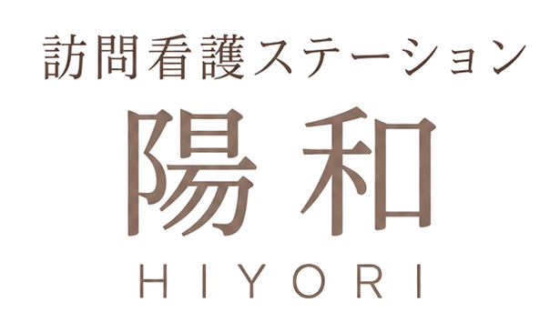
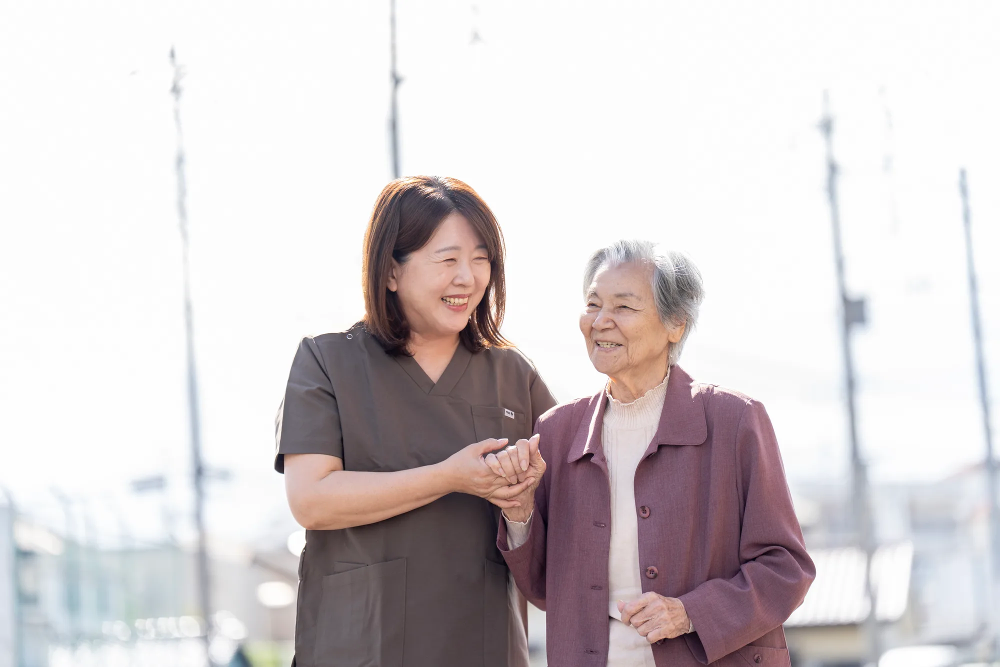

さいたま市北区の
訪問看護ステーション陽和（ひより）です。
病気や障がいがあっても、
住み慣れた家で、その人らしく。
ご本人とご家族の毎日に、
看護師が寄り添います。

ご本人やご家族、医療・介護の仲間と手を取り合って、はじめて良い看護ができる。陽和は、この街で、ずっとそばにいる看護を目指します。
陽和についてご自宅ではその場の判断が求められます。経験を重ねたスタッフが、先を見通したケアを。
がん・難病・精神疾患・医療的ケア・小児まで。分野を絞らず、まずはご相談を。
同じ事業所に「ケアプランひより」。介護と看護の連携がスムーズです。
三友会福祉グループとして、県内で通所・訪問介護など21拠点を運営しています。
小さなお子さまから高齢の方まで、幅広く対応しています。
痛みや苦しさをやわらげ、
穏やかに過ごせるように
ALS・パーキンソン病など
長い療養生活を支えます
人工呼吸器・在宅酸素・
胃ろう・点滴などの管理
最期まで、望む過ごし方を
ご本人・ご家族とともに
医療的ケアが必要な
お子さまとご家族に
こころの不調があっても
地域で暮らし続けられるように
病院から自宅へ
安心して移れるように
障害者手帳をお持ちの方も
ご相談ください
エリア外の方も、お気軽にご相談ください。
退院前のご相談から、急ぎのご依頼まで。
親身にお伺いします。お気軽にご連絡ください。
受付 平日 9:00〜18:00